Tudo o que foi construído até aqui: proposta, identidade visual, painel inicial, fichas temáticas, página “Leis e temas”, modelo de dados, arquitetura e próximos passos.
Um registro do estado atual do projeto para consulta, revisão e alinhamento antes da próxima etapa.
Uma plataforma de consulta jurídica prática, organizada para o uso diário, com conteúdo cadastrado e conferido manualmente.
O Consulta Penal organiza, num só lugar, o material de apoio para consultas penais e cíveis, incluindo temas de família. O nome vem da origem do projeto, mas o escopo abrange as três áreas.
A plataforma reúne, de forma navegável e pesquisável:
Diplomas legais com link para a fonte oficial.
Um tema por ficha, com base legal, julgados e checklist.
Julgados selecionados, referenciados pela fonte oficial.
Checklists para conferir peças antes do protocolo.
Correções de escrita jurídica: incorreto → correto.
Ferramentas práticas, tabelas-resumo e guias por tema.
Importante: todo o conteúdo jurídico existente hoje na plataforma é demonstrativo e fictício, criado apenas para visualizar o layout e a estrutura. Ele não constitui orientação jurídica validada.
Atmosfera jurídica clássica, sofisticada e acolhedora, com foco em legibilidade para o uso diário.
Fundo marfim, bordô profundo como cor principal e dourado envelhecido nos detalhes. Verde e vermelho aparecem apenas para indicar “correto” e “incorreto”.
Família serifada clássica (Cormorant/Garamond, com alternativas do sistema).
Inter (ou a fonte do sistema), escolhida pela legibilidade em telas pequenas.
A visão geral reúne a busca e os atalhos mais usados, organizados por área.
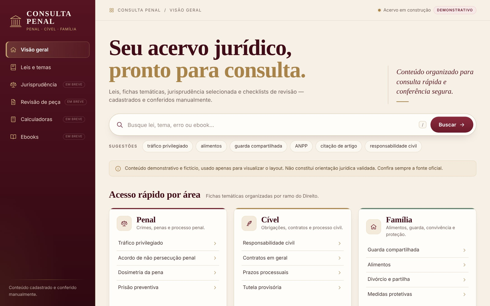
| Área | Função |
|---|---|
| Menu lateral | Visão geral, Leis e temas, Jurisprudência, Revisão de peça, Calculadoras e Ebooks. Os quatro últimos estão marcados como “em breve”. |
| Busca | Procura em leis, fichas, jurisprudência, erros e ebooks. Atalho: tecla /. Resultados de leis e fichas abrem a página correspondente. |
| Acesso rápido por área | Cartões Penal, Cível e Família, com as fichas de cada área e o link “Ver fichas”. |
| Erros recorrentes | Exemplo de correção de escrita jurídica, com navegação entre os exemplos. |
| Continuar de onde parou | Consulta recente com barra de progresso e etapas; o botão abre a ficha ligada. |
| Ebooks específicos | Vitrine com capas, área e descrição. |
| Links rápidos | Código Penal, CPP, Código Civil, CPC, Lei Maria da Penha e ECA. |
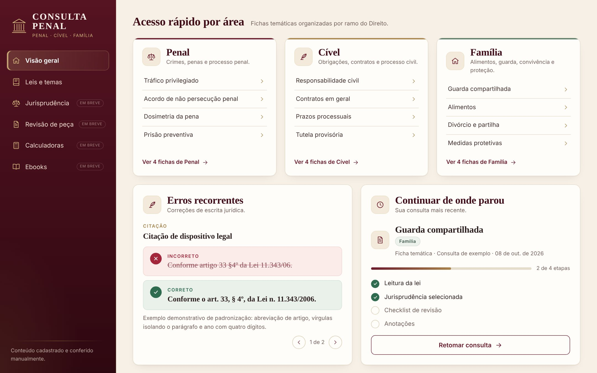
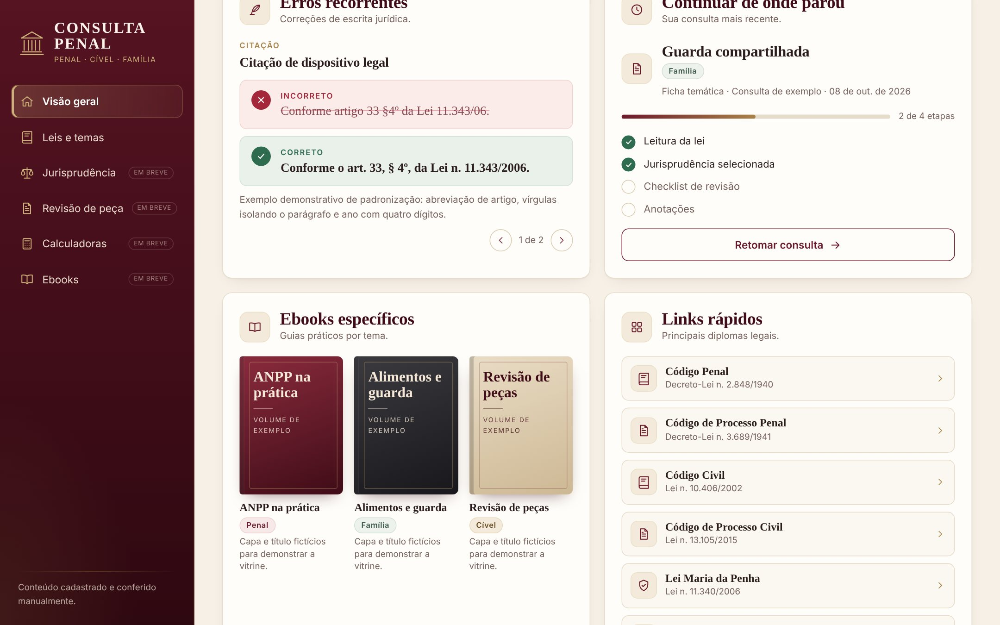
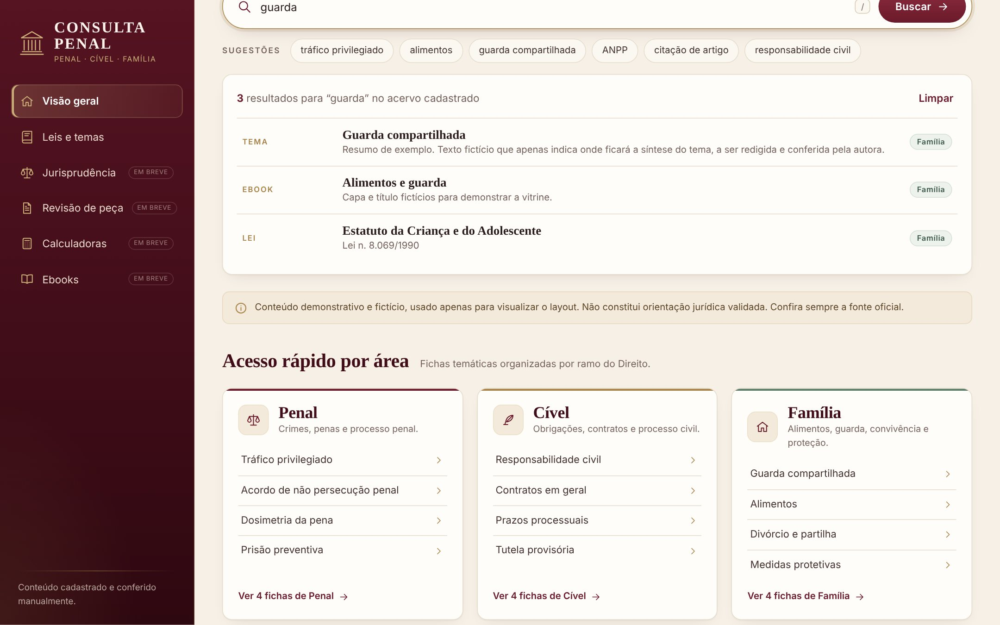
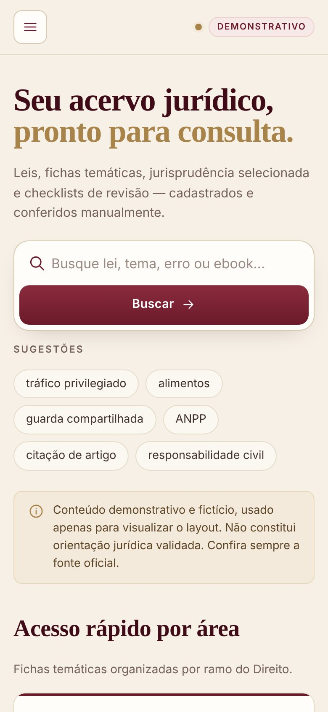
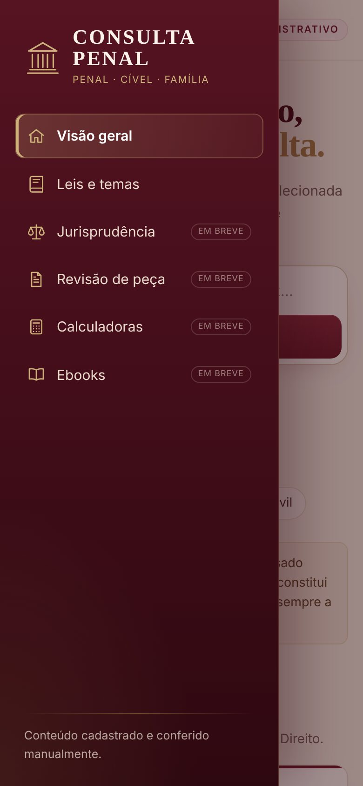
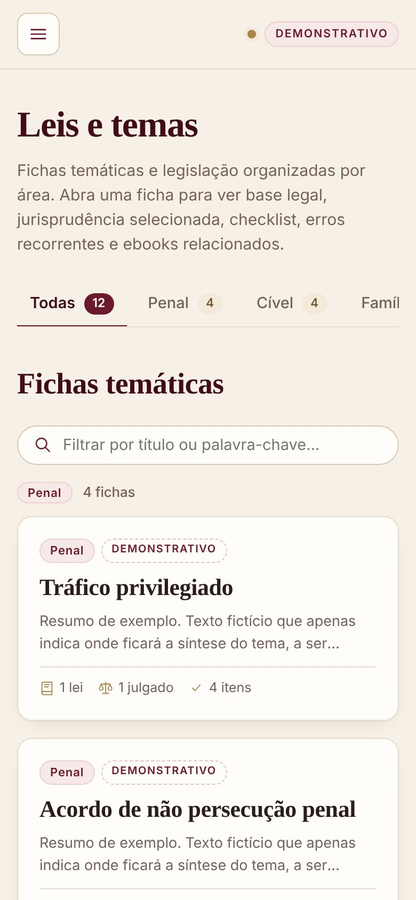
A página para navegar por área, abrir as fichas temáticas e consultar as leis cadastradas.
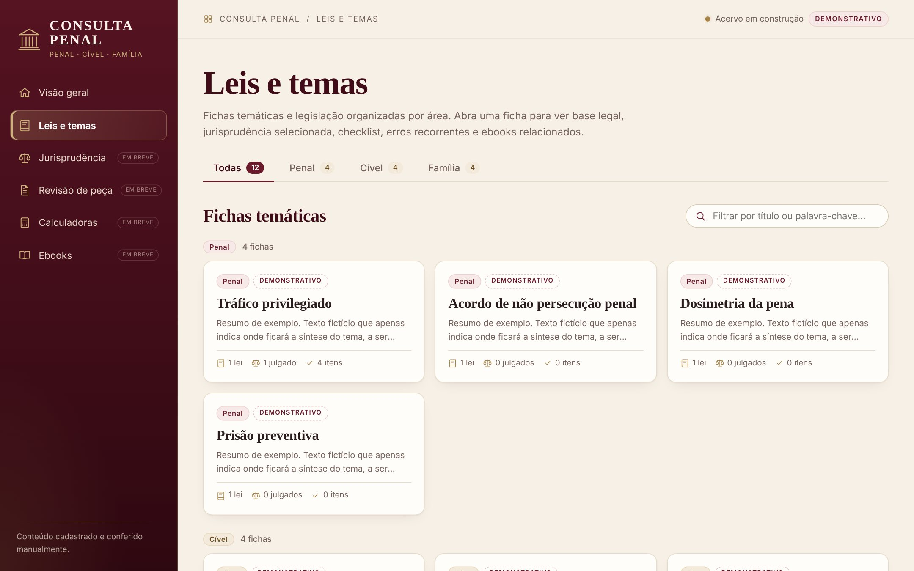
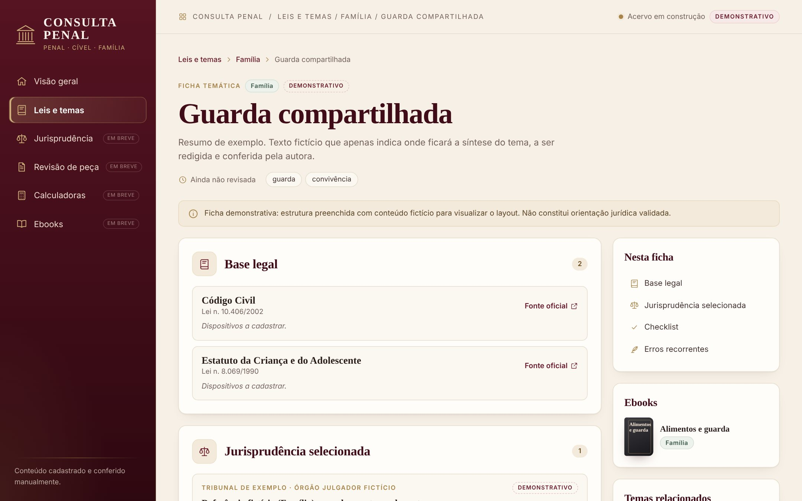
Cada ficha segue a mesma organização, com seções numeradas e uma coluna lateral:
Caminho de navegação, área, status, título, resumo, data de revisão e palavras-chave (que disparam a busca).
Leis ligadas ao tema, com dispositivos, observação e link para a fonte oficial.
Tribunal, órgão, classe, número, data e assunto. Sem trechos: o inteiro teor fica na fonte oficial.
Itens marcáveis, com progresso. As marcações ficam salvas apenas no navegador.
Pares incorreto → correto, com explicação.
Índice “Nesta ficha”, ebooks, temas relacionados e observações.
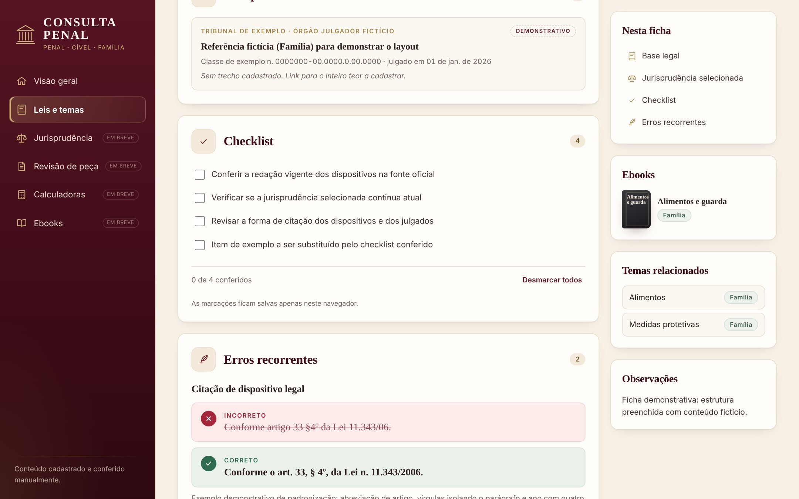
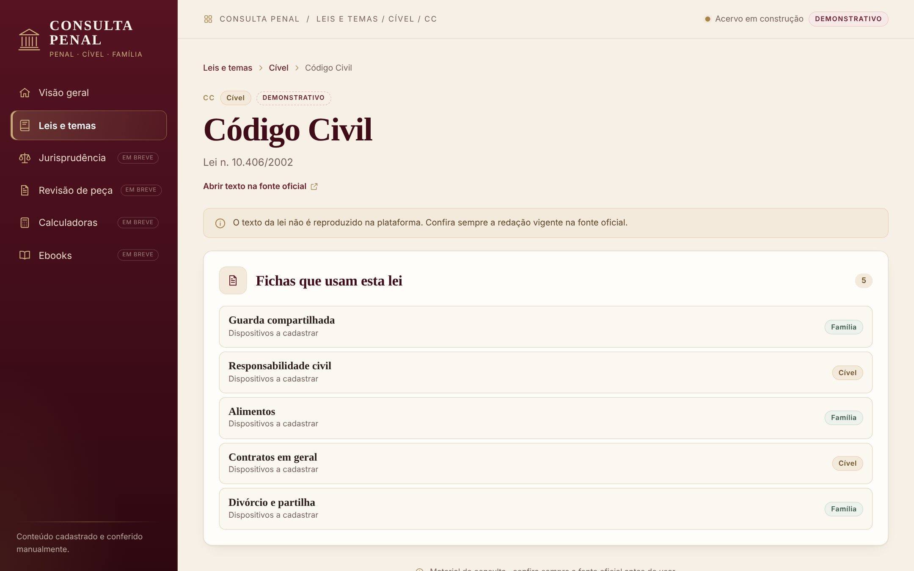
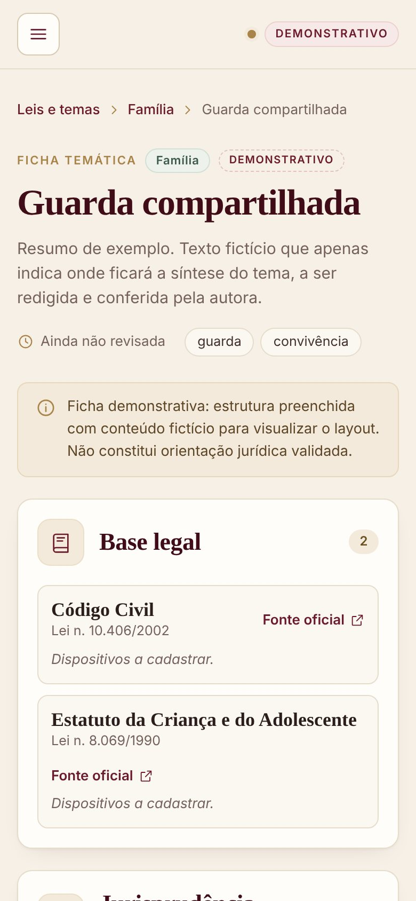
Endereços das páginas
#/ visão geral
#/leis-e-temas todas as áreas
#/leis-e-temas/familia uma área
#/temas/guarda-compartilhada ficha
#/leis/codigo-civil lei
Cada página tem endereço próprio: dá para salvar nos favoritos, voltar com o navegador e abrir em outra aba.
Todo o conteúdo fica em arquivos JSON na pasta consultapenal/dados/. A interface não contém texto jurídico fixo.
| Arquivo | Conteúdo | Hoje |
|---|---|---|
painel.json | Nome, títulos, aviso, sugestões de busca e links rápidos. | — |
areas.json | Áreas: Penal, Cível e Família. | 3 |
leis.json | Diplomas legais, com sigla, norma e fonte oficial. | 7 |
temas/<id>.json | Fichas temáticas, uma por arquivo. | 12 |
jurisprudencia.json | Julgados selecionados (só referência). | 3 |
erros.json | Erros recorrentes de escrita. | 2 |
ebooks.json | Vitrine de ebooks. | 3 |
consultas_recentes.json | Consulta a retomar, ligada a uma ficha. | 1 |
A ficha é o centro do acervo: ela aponta, por id, para os demais conteúdos. Todas as referências são conferidas quando o acervo é carregado.
| Campo | Conteúdo | Obrigatório |
|---|---|---|
id | Identificador; igual ao nome do arquivo. | sim |
titulo | Nome do tema. | sim |
area | penal, civel ou familia. | sim |
resumo | Síntese do tema. | sim |
status | rascunho, demonstrativo ou conferido. | sim |
revisado_em | null ou data AAAA-MM-DD. | não |
ordem | Posição dentro da área. | não |
palavras_chave | Termos extras para busca e filtro. | não |
base_legal | Lista de {lei, dispositivos, observacao}. | não |
jurisprudencia | Ids de jurisprudencia.json. | não |
checklist | Lista de textos. | não |
erros | Ids de erros.json. | não |
ebooks | Ids de ebooks.json. | não |
relacionados | Ids de outras fichas. | não |
observacoes | Texto livre. | não |
// consultapenal/dados/temas/guarda-compartilhada.json (trecho) { "id": "guarda-compartilhada", "titulo": "Guarda compartilhada", "area": "familia", "status": "demonstrativo", "revisado_em": null, "resumo": "Resumo de exemplo. Texto fictício…", "base_legal": [ { "lei": "codigo-civil", "dispositivos": "", "observacao": "" }, { "lei": "eca", "dispositivos": "", "observacao": "" } ], "jurisprudencia": ["exemplo-familia"], "checklist": ["Conferir a redação vigente dos dispositivos na fonte oficial", "…"], "erros": ["citacao-dispositivo", "a-nivel-de"], "ebooks": ["exemplo-alimentos"], "relacionados": ["alimentos", "medidas-protetivas"] }
Os julgados guardam tribunal, órgão julgador, classe, número, data de julgamento, assunto e link para a fonte oficial. O catálogo não tem campos de ementa, tese ou trecho, e há um teste que garante isso.
O cadastro é feito editando os arquivos de dados. Basta salvar e recarregar a página; não é preciso reiniciar o servidor.
dados/temas/_modelo.json para dados/temas/<id>.json. Arquivos começados por _ são modelos e não aparecem na plataforma.id o mesmo nome do arquivo, só com letras minúsculas, números e hífens (ex.: prisao-preventiva).ids já cadastrados nos respectivos arquivos.conferido e preencha revisado_em.| Para… | Edite |
|---|---|
| Nova lei | leis.json: id, sigla, nome, norma, área e fonte oficial. |
| Novo julgado | jurisprudencia.json: id, área, tribunal, assunto e demais dados de referência. |
| Novo erro recorrente | erros.json: id, título, incorreto, correto e explicação. |
| Novo ebook | ebooks.json: id, título, área e capa (bordo, grafite ou areia). |
| Links rápidos do painel | painel.json, lista links_rapidos com ids de leis. |
| Sugestões de busca | painel.json, lista buscas_sugeridas. |
Ao carregar o acervo, a plataforma confere os arquivos. Se algo estiver errado, a página mostra uma mensagem com o arquivo e o problema, em vez de exibir conteúdo quebrado.
AAAA-MM-DD.Exemplos de mensagens
Arquivo de dados inválido: temas/alimentos.json: referência a leis inexistente "lei-inexistente"
Arquivo de dados inválido: temas/alimentos.json: o id "outro-id" deve ser igual ao nome do arquivo
Arquivo de dados inválido: erros.json: JSON inválido (linha 1, coluna 2)
Simples, local e sem dependências externas, no mesmo padrão do projeto que já existia no repositório.
O repositório já continha o Digital Evidence Lab, uma ferramenta de triagem forense de e-mails sem relação com o Consulta Penal. Ele foi preservado intacto. O Consulta Penal está num pacote separado, consultapenal/, que segue as mesmas convenções e roda nos mesmos testes automáticos (CI).
consultapenal/ ├── __main__.py # python3 -m consultapenal ├── server.py # servidor local somente leitura ├── conteudo.py # leitura e validação dos dados, referências e busca ├── dados/ # conteúdo cadastrável │ ├── painel.json, areas.json, leis.json, jurisprudencia.json │ ├── erros.json, ebooks.json, consultas_recentes.json │ └── temas/ # uma ficha por arquivo + _modelo.json └── static/ ├── index.html, app.css └── js/ # app (rotas), ui, painel, temas tests/test_consultapenal.py
python3 -m consultapenal # abre http://127.0.0.1:8765/ python3 -m consultapenal --port 9000 --no-browser python3 -m unittest tests.test_consultapenal # testes do Consulta Penal
Requer apenas Python 3.10 ou mais recente. Nada precisa ser instalado.
| Rota | Resposta |
|---|---|
/ | A página da aplicação. |
/static/… | CSS e módulos JavaScript, por lista fixa. |
/api/painel | Todo o acervo validado, lido dos arquivos a cada requisição. |
/api/busca?q= | Resultados da busca no conteúdo cadastrado. |
127.0.0.1, o próprio computador.../ não funcionam.São 17 testes do Consulta Penal (86 no repositório inteiro, todos passando). Eles cobrem:
O que já funciona, o que ainda é demonstrativo e o que depende de decisão ou conferência.
O caminho percorrido e o roteiro sugerido para as próximas entregas.
Menu, busca, cartões por área, erros, ebooks, consulta recente e links rápidos.
Ficha temática, página por área, página de lei e validação de referências.
Preencher uma ficha conferida para validar os campos.
Página própria sobre o catálogo existente.
jurisprudencia.json, com filtros por área, tribunal e tema.Antes do próximo passo: vale revisar este caderno e anotar o que deve mudar no painel, na ficha ou no modelo de dados. Ajustes de estrutura são mais simples agora, enquanto o conteúdo é demonstrativo.
Consulta Penal · Caderno do projeto · versão 0.2
Gerado em 8 de outubro de 2026 a partir do estado atual do repositório. As imagens são capturas reais da aplicação com conteúdo demonstrativo e fictício.
Material de documentação do projeto. Não constitui orientação jurídica.